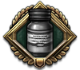

指挥官
原页面：Commander
A 指挥官 leads a number of 部队 and provides bonuses to them based on the commander's skills and traits. For a list of commanders by 国家, see list of commanders.
Divisions also have divisional commanders, or officers, assigned to them. These can be seen when viewing the details of a division, or, with  唯有鲜血, when viewing the list of officers that can be promoted to generals. They are purely flavor when playing without
唯有鲜血, when viewing the list of officers that can be promoted to generals. They are purely flavor when playing without  唯有鲜血, but when playing with
唯有鲜血, but when playing with  唯有鲜血, they can gain medals through earning experience with their division, and new generals are promoted from them instead of being purely randomly generated.
唯有鲜血, they can gain medals through earning experience with their division, and new generals are promoted from them instead of being purely randomly generated.
Hiring
New generals can be recruited at a cost of 5[1] 指挥点数 for each existing general, up to a maximum of 80[2]
指挥点数 for each existing general, up to a maximum of 80[2]  指挥点数. New admirals can be recruited at a cost of 5
指挥点数. New admirals can be recruited at a cost of 5  指挥点数[3] for each existing admiral, up to a maximum of 80[4]
指挥点数[3] for each existing admiral, up to a maximum of 80[4] 指挥点数. Commanders cannot normally die or be dismissed, though some country-specific events will remove particular historical commanders.
指挥点数. Commanders cannot normally die or be dismissed, though some country-specific events will remove particular historical commanders.
Newly recruited generals have a 95% chance to start at skill level 1 and a 5% chance to start at skill level 2.[5] This can be increased through various bonuses, e.g.,  军校奖学金和
军校奖学金和 精英中的精英 军校精神 军官团 spirits.
精英中的精英 军校精神 军官团 spirits.
Newly recruited admirals have a 95% chance to start at skill level 1 and a 5% chance to start at skill level 2.[6] This can be increased through various bonuses, e.g.,  军校奖学金和
军校奖学金和 精英中的精英 Spirit of the Naval Academy 军官团 spirits.
精英中的精英 Spirit of the Naval Academy 军官团 spirits.
With  唯有鲜血, new generals are promoted from divisional commanders instead of purely randomly generated. Doing so causes the newly promoted general's assigned division to lose 25%[7] of its 经验 and to generate a new officer to replace their old divisional commander, though the experience loss is completely negated with the
唯有鲜血, new generals are promoted from divisional commanders instead of purely randomly generated. Doing so causes the newly promoted general's assigned division to lose 25%[7] of its 经验 and to generate a new officer to replace their old divisional commander, though the experience loss is completely negated with the  卓越传承 军官团 spirit. Divisional commanders promoted to generals will keep the experience that they earned as divisional commanders. If they have at least 400[8] experience when they are promoted, they will also randomly get a trait like
卓越传承 军官团 spirit. Divisional commanders promoted to generals will keep the experience that they earned as divisional commanders. If they have at least 400[8] experience when they are promoted, they will also randomly get a trait like  步兵军官,
步兵军官,  骑兵军官,
骑兵军官,  装甲军官, or
装甲军官, or  工兵军官 based on the battalions and 支援连 present in the division to which they were assigned.
工兵军官 based on the battalions and 支援连 present in the division to which they were assigned.
通用
Generals can command up to 24[9] 师 effectively unless they are in "驻防区域" mode, during which the limit is tripled to 72[10] divisions. Above this limit, their bonuses and XP gain are reduced proportionally. The traits of generals are oriented towards specialization in different units (e.g., tanks, foot infantry), adverse terrain/climates and tactical situations (e.g., attacking forts). Generals may be promoted to field marshals at the cost of 指挥点数 and the temporary loss of one skill level.
Field marshal
A field marshal commands army groups, large formations composed of several armies. A field marshal initially may command up to 5[11] armies; with the 授权专家 trait, this limit can be increased to seven. Their traits give general bonuses, helping any kind of unit, such as, for example, +10% recovery rate, or increasing maximum army sizes. All armies assigned to the field marshal's army group receive these bonuses.
General's traits and the field marshal's skill levels apply to subordinate armies with a 50%[12] penalty. Modifiers from Personality traits, such as  Cautious or
Cautious or  老卫队, are passed down to generals with no penalty.
老卫队, are passed down to generals with no penalty.
They can still be used as generals, but their field marshal traits will be disabled when they are not commanding an army group. However, bonuses from field marshal traits to specialized skills, e.g., the +1 Attack from  进攻学说, still apply even when a field marshal is commanding an army instead of an army group.
进攻学说, still apply even when a field marshal is commanding an army instead of an army group.
海军上将
Admirals can command up to 10[13] task forces. Above this limit, their bonuses and experience gain are reduced proportionally.
Divisional Commander
师级指挥官, or officers, are commanders below the level of generals who are in charge of individual divisions. Just like other commanders, they gain experience when fighting in battles, though this experience does not provide any benefits until/unless they are promoted to generals. They can accrue up to 8000[14] experience as divisional commanders.
All divisions will always have a divisional commander assigned to them. In the base game, there is a 0%[15] chance that a divisional commander will be a woman, but this can be easily changed with modding.
技能
Commanders have a generic skill level and specialized skills for different aspects of warfare. Only admirals gain immediate benefits from their generic level.
| Required Experience | Admiral Effects | |||||
|---|---|---|---|---|---|---|
| 等级 | 通用 | 陆军元帅 | Officer |
海军上将 | Hit Chance | Coordination |
| 1 | 100 | 100 | 100 | 100 | +5% | +1% |
| 2 | 300 | 300 | 200 | 200 | +10% | +3% |
| 3 | 500 | 500 | 400 | 400 | +15% | +5% |
| 4 | 1000 | 1000 | 800 | 800 | +20% | +7% |
| 5 | 1500 | 1500 | – | 1600 | +25% | +9% |
| 6 | 2500 | 2500 | – | 3200 | +30% | +11% |
| 7 | 5000 | 5000 | – | 6400 | +35% | +13% |
| 8 | 7500 | 7500 | – | 12800 | +40% | +15% |
| 9 | 10000 | 10000 | – | 25600 | +45% | +17% |
The specialized skills for generals and field marshals and their effects are:
- 攻击, increasing soft attack and hard attack of divisions. +2.5% per level
- 防御, increasing defense and breakthrough. +2.5% per level
- 后勤, reducing supply consumption. +2.5% per level
- 计划, increasing the speed and value of plan preparation. +5% planning speed, +2% max planning per level
For admirals, they are:
- 攻击, increasing the damage done to enemy ships by your weapons. Attack: +5% per level
- 防御, increasing ship armor and decreasing enemy damage. Defense: +5% per level
- Maneuvering, getting ships into and out of combat faster. Fleet speed while retreating: +1%, Positioning: +2.5% per level
- Coordination, improving mission execution. Fleet Coordination: (Level*2)-1%
With  唯有鲜血, divisional commanders (officers) do not provide any additional benefits to their division from their skill levels, but the experience they earn as divisional commanders is kept when they are promoted to generals, and they can gain a trait when this happens if they have earned enough experience.
唯有鲜血, divisional commanders (officers) do not provide any additional benefits to their division from their skill levels, but the experience they earn as divisional commanders is kept when they are promoted to generals, and they can gain a trait when this happens if they have earned enough experience.
Skill factor
When leveling up, a commander gains 3[17] points in specialized skills. These points are distributed randomly, but many commanders' traits skew this distribution with a hidden in-game modifier called skill factor. The same specialized skill can be increased multiple times.
For generals and field marshals, the default weights for Attack, Defense, Logistics, and Planning are 5, 5, 5, and 5, respectively.[18] For admirals, the default weights for Attack, Defense, Maneuvering, and Coordination are 5, 5, 5, and 5, respectively.[19] Various 特质, such as  杰出战略家 or
杰出战略家 or  媒体名人, can modify these weights, increasing the chance that certain specialized skills get increased over others.
媒体名人, can modify these weights, increasing the chance that certain specialized skills get increased over others.
Certain 军官团 spirits, such as  大胆进攻 or
大胆进攻 or  通信训练, provide a chance to further increase one or more specialized skills whenever a commander gains a skill level. These are on top of the 3 points that would normally be gained when leveling up. They also apply when commanders gain skill levels from 国策, such as with
通信训练, provide a chance to further increase one or more specialized skills whenever a commander gains a skill level. These are on top of the 3 points that would normally be gained when leveling up. They also apply when commanders gain skill levels from 国策, such as with  Improve the Motorized Troops for the
Improve the Motorized Troops for the  德意志国, Honor the Great War Veterans for
德意志国, Honor the Great War Veterans for  匈牙利, or
匈牙利, or  Indianize The Army for
Indianize The Army for  英属印度.
英属印度.
特质
- 主条目：指挥官特质
Each commander may have a number of traits, represented by medal icons. Traits are acquired when units do a certain action in combat. For example, if an army under a general manages to encircle and destroy an amount of enemy divisions, the general may acquire the  诡计者 trait, which boosts reconnaissance. Experience gained towards gaining traits is decreased the more earnable traits the general already has.
诡计者 trait, which boosts reconnaissance. Experience gained towards gaining traits is decreased the more earnable traits the general already has.
Abilities
Generals and field marshals have a number of abilities, represented by icons on top of Battle plans. Abilities can be acquired through traits, and some can be upgraded through certain 国策. All abilities cost  指挥点数 (CP) to use, with the exact amount scaling based on the number of battalions in the divisions under the commander's control.
指挥点数 (CP) to use, with the exact amount scaling based on the number of battalions in the divisions under the commander's control.
| 图标 | Command Ability | Effect on All Divisions | Duration | Cooldown | 备注 | |
|---|---|---|---|---|---|---|
| Extra Supplies |
|
7 days | 21 days | 0.20 | Available to commanders with the  Quinine and those of | |
| Supply Quinine |
|
10 days | 21 days | 0.15 | 在完成「奎宁」后，可供 Available to all commanders of | |
| 参谋部计划 | 7 days | – | 0.12 | Available to all commanders except those of | ||
| Staff Office Plan (Japan) | 9 days | – | 0.06 | Available to all commanders of | ||
| Force Attack |
|
7 days | – | 0.22 | Available to all generals except those of | |
| 强攻 (upgrade) |
|
7 days | – | 0.11 | 在完成「敢死军团」后，可供 Available to all generals of | |
| 强攻 (China) |
|
7 days | – | 0.22 | Available to all generals of | |
| Last Stand |
|
7 days | – | 0.22 | Available to all generals except those of | |
| 死守 (upgrade) |
|
7 days | – | 0.05 | 在完成「武士道精神」后，可供 Available to all generals of | |
| 死守 (Japan) |
|
10 days | – | 0.05 | Available to all generals of | |
| 死守 (Sweden) |
|
7 days | – | 0.16 | Available to all generals of | |
| Last Stand (Philippines) |
|
7 days | – | 0.16 | Available to all generals of | |
| Probing Attack |
|
7 days | – | 0.10 | Available to commanders with the | |
| 攻城炮兵 |
|
7 days | – | 0.10 | Available to commanders with the | |
| 滑翔机 | 7 days | – | 0.10 | Available to commanders with the | ||
| Makeshift Bridges |
|
7 days | – | 0.10 | Available to commanders with the | |
| Naval Assault Plan | 海军登陆 Preparation Speed: +50.0% | 7 days | – | 0.10 | Available to commanders with the | |
| Requisition Winter Gear | 7 days | – | 0.10 | Not available for anyone. | ||
| File:Extra medics.png | Stockpile Medical Supplies | Casuality trickleback +4% | 14 天 | – | 0.22 | Requires a deployed Army HQ with the "Hospital Group Staff" division |
| File:Deeper dig in.png | Prepare Fallback Positions | Entrenchment speed +6 | 7 days | – | 0.12 | Requires a deployed Army HQ with the "Engineer Staff" division |
| File:Defense in depth.png | Defense in Depth | 最大计划值 -50% Max entrenchment +3 |
until cancelled | – | 0.1 | Requires a deployed Army HQ with the "Reconnaissance Staff" division |
| File:Front overrun.png | Exploit Breakthroughs | 移动时的组织度损失 -10% Plan preparation decay rate -20% Strength damage taken +40% |
until cancelled | – | 0.1 | Requires a deployed Army HQ with the "Logistics & Service Staff" division |
| File:Rotating reserves.png | Rotating Reserves | Reinforcement rate +6% | 7 days | – | 0.12 | Requires a deployed Army HQ with the "Signal & Intelligence Staff" division |
经验
Commanders gain experience when the units under their command engage in combat. With enough experience, they will advance a skill level. For generals the amount of experience gained in each battle per hour depends on multiple factors:
- The base value is 0.45[20].
- The number and size of actively fighting divisions under the general's command: Each division counts as 10%.[21] Small divisions (less than 8[22] battalions and support companies) count proportionately for less, e.g. a division containing only 3 battalions would count only as 3.75%.
- Damage comparison：在过去 24 小时内造成更多伤害（HP 与组织度合计）的一方获得更多经验，而另一方获得的更少。如果战斗持续时间尚不足 24 小时，该加成会减少。
- The side that dealt more damage gets up to 400%[23] of normal XP when dealing up to 400%[24] as much damage as it received
- The side dealing less damage gets their XP gain scaled down by the average equipment ratio and average organization ratio of their divisions (including reserve), e.g. when all division are at half strength and have half of their organization, the experience is scaled to 25%.
- These two effects do not stack with each other, i.e. each side is only affected by one of them.
- 随时间衰减: every hour of combat XP gain decays linearly by 0.125%[25] until reaching 10%[26] (after 30 days).
- If multiple generals fight on the same side, each one only gets 50%[27] + 50%[27] / (number of generals). This results in 100%, 75%, 67% etc. for each general of a total of 1, 2, 3 etc.
- Command limit penalty: A general receives a scaling penalty when commanding too many units. The penalty reaches 100% when commanding twice as many units as the usual limit.
- 修正项: national ideas and leader traits (e.g. Old Guard and Politically Connected) can increase or reduce the XP gain. They all stack additively.
If the battle matches any traits gainable through combat, the experience also counts towards those.
Generals also gain 35[28] experience for overrunning units and 35[29] for shattering them.
If the general is under the command of a field marshal, the latter also gains 30%[30] of the experience, including towards their applicable traits. A field marshal does not gain experience from units without a general.
| XP type | Division-combat-hours per XP |
|---|---|
| General trait | 25 |
| General level | 50 |
| Field Marshal trait | 200 |
| Field Marshal level | 400 |
With  唯有鲜血, divisional commanders initially gain 4%[31] of the 经验 earned by their division in combat, but this is increased by +10%[32] for each medal the division has earned. They do not gain experience earned from training the division, only from combat. Unlike experience on the division, experience for the divisional commander is not lost when their division suffers
唯有鲜血, divisional commanders initially gain 4%[31] of the 经验 earned by their division in combat, but this is increased by +10%[32] for each medal the division has earned. They do not gain experience earned from training the division, only from combat. Unlike experience on the division, experience for the divisional commander is not lost when their division suffers  人力 losses.
人力 losses.
Most medals give a division's divisional commander an additional 100 XP when they are granted.
参考资料
- ↑
NDefines.NPolitics.ARMY_LEADER_COST = 5中的 定义文件。 - ↑
NDefines.NPolitics.ARMY_LEADER_MAX_COST = 80中的 定义文件。 - ↑
NDefines.NPolitics.NAVY_LEADER_COST = 5中的 定义文件 - ↑
NDefines.NPolitics.NAVY_LEADER_MAX_COST = 80中的 定义文件。 - ↑
NDefines.NMilitary.NEW_ARMY_LEADER_LEVEL_CHANCES = { 0.95, 0.05 }中的 定义文件。 - ↑
NDefines.NNavy.NEW_NAVY_LEADER_LEVEL_CHANCES = { 0.95, 0.05 }中的 定义文件。 - ↑
NDefines.NMilitary.FIELD_OFFICER_PROMOTION_PENALTY = 0.25中的 定义文件。 - ↑
NDefines.NMilitary.DIVISIONAL_COMMANDER_TRAIT_XP_REQUIREMENT = 400中的 定义文件。 - ↑
NDefines.NMilitary.CORPS_COMMANDER_DIVISIONS_CAP = 24中的 定义文件。 - ↑
NDefines.NMilitary.CORPS_COMMANDER_DIVISIONS_CAP = 24和NDefines.NMilitary.GARRISON_ORDER_ARMY_CAP_FACTOR = 3，见定义文件。 - ↑
NDefines.NMilitary.FIELD_MARSHAL_ARMIES_CAP = 5中的 定义文件。 - ↑
NDefines.NMilitary.FIELD_MARSHAL_ARMY_BONUS_RATIO = 0.5中的 定义文件。 - ↑
NDefines.NNavy.ADMIRAL_TASKFORCE_CAP = 10中的 定义文件。 - ↑
NDefines.NMilitary.MAX_FIELD_EXPERIENCE_ON_DIVISION = 8000中的 定义文件。 - ↑
NDefines.NMilitary.BASE_FEMALE_DIVISIONAL_COMMANDER_CHANCE = 0中的 定义文件。 - ↑
NDefines.NMilitary.DIVISIONAL_COMMANDER_RANK_XP_THRESHOLD = { 0, 100, 200, 400, 800 }中的 定义文件。 - ↑
NDefines.NMilitary.COMMANDER_LEVEL_UP_STAT_COUNT = 3中的 定义文件。 - ↑
NDefines.NMilitary.COMMANDER_LEVEL_UP_STAT_WEIGHTS = { 5, 5, 5, 5 }中的 定义文件。 - ↑
NDefines.NMilitary.NAVY_LEADER_LEVEL_UP_STAT_WEIGHTS = { 5, 5, 5, 5 }中的 定义文件。 - ↑
NDefines.NMilitary.BASE_LEADER_TRAIT_GAIN_XP = 0.45中的 定义文件。 - ↑
NDefines.NMilitary.ARMY_LEADER_XP_GAIN_PER_UNIT_IN_COMBAT = 0.1中的 定义文件。 - ↑
NDefines.NMilitary.DIVISION_SIZE_FOR_XP = 8中的 定义文件。 - ↑
NDefines.NMilitary.XP_GAIN_FACTOR_FOR_MAX_RELATIVE_COMBAT_DAMAGE = 4中的 定义文件。 - ↑
NDefines.NMilitary.MAX_RELATIVE_COMBAT_DAMAGE_TO_MODIFY_XP = 4中的 定义文件。 - ↑
NDefines.NMilitary.XP_DECAY_RATE_PER_HOUR_IN_COMBAT = 0.03中的 定义文件。 - ↑
NDefines.NMilitary.MIN_XP_RATE_TO_DECAY = 0.1中的 定义文件。 - ↑ 27.0 27.1
NDefines.NMilitary.CONSTANT_XP_RATIO_FOR_MULTIPLE_LEADERS_IN_SAME_COMBAT = 0.5中的 定义文件 - ↑
NDefines.NMilitary.XP_GAIN_PER_OVERRUN_UNIT = 35中的 定义文件。 - ↑
NDefines.NMilitary.XP_GAIN_FOR_SHATTERING = 35中的 定义文件。 - ↑
NDefines.NMilitary.FIELD_MARSHAL_XP_RATIO = 0.3中的 定义文件。 - ↑
NDefines.NMilitary.FIELD_EXPERIENCE_ON_DIVISION_MULT = 0.04中的 定义文件。 - ↑
NDefines.NMilitary.FIELD_EXPERIENCE_ON_DIVISION_PER_MEDAL_MULT = 0.1中的 定义文件。
| 政治 | 意识形态 • 阵营 • 国策 • 理念 • 政府 • 傀儡国 • 流亡政府 • 外交 • 世界紧张度 • 内战 • 占领 • 力量均势 |
| 生产 | 贸易 • 生产 • 建造 • 装备 • 燃料 • 军工组织 • 国际市场 |
| 科研与科技 | 科研 • 步兵科技 • 支援连科技 • 装甲科技（也包括 未拥有绝不后退）• 火炮科技 • 陆军学说 • 特种部队学说 • 海军科技（也包括 未拥有全民持枪）• 海军支援科技 • 海军学说 • 空军科技（也包括 未拥有以血盟誓）• 空军学说 • Engineering科技 • Industry科技 • 特殊项目 • 科学家 |
| 军事与战争 | 战争 • 和平会议 • 陆军单位 • 陆战 • 师编制设计 • 坦克设计 • 陆军编制器 • 集团军 • 指挥官 • 作战计划 • 战斗战术 • 舰船 • 舰船设计（伦敦海军条约）• 海战 • 飞机设计 • 空战 • 经验 • 军官团 • 损耗与事故 • 后勤 • 人力 • 核弹 • 突袭 |
| 间谍活动 | 情报 • 情报机构 • 特工 • 任务 • 行动 |
| 地图 | 地图 • 省份 • 地形 • 天气 • 州 |
| 事件与决议 | 事件 • 决议 |